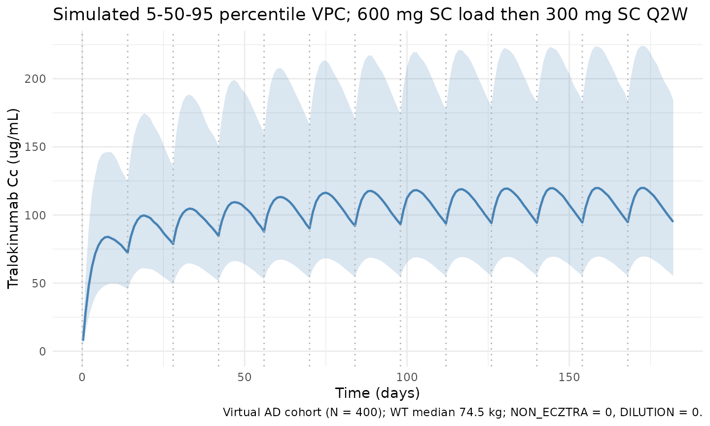
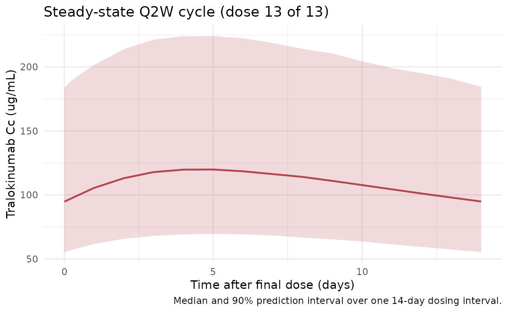

Tralokinumab (Soehoel 2022)
Source:vignettes/articles/Soehoel_2022_tralokinumab.Rmd
Soehoel_2022_tralokinumab.RmdModel and source
- Citation: Soehoel A, Larsen MS, Timmermann S. Population Pharmacokinetics of Tralokinumab in Adult Subjects With Moderate to Severe Atopic Dermatitis. Clinical Pharmacology in Drug Development. 2022;11(8):910-921. doi:10.1002/cpdd.1113
- Description: Two-compartment population PK model for tralokinumab (Soehoel 2022) in adults with moderate-to-severe atopic dermatitis, with SC first-order absorption and allometric body-weight effects.
- Article: Clin Pharmacol Drug Dev. 2022;11(8):910-921 (open-access via PMC9796478)
Population
The published analysis pooled 2561 subjects (13,361 quantifiable serum concentrations) across 10 clinical trials: 3 phase 3 trials (ECZTRA 1/2/3), 4 phase 2 trials (including the diluted-formulation trial D2213C00001), and 3 phase 1 trials, enrolling atopic-dermatitis patients (n = 2066, 81%), asthma patients (n = 441, 17%), and healthy volunteers (n = 54, 2%). Baseline demographics from Soehoel 2022 Table 1: age median 38 years (range 18-92, 131 subjects >= 65 years); body weight median 74.5 kg (range 36-165); 55% male / 45% female; race 67% White, 22% Asian, 7% Black/African American; ethnicity 9% Hispanic/Latino. Baseline EASI score in AD subjects: median 27.5 (range 12-72). Subcutaneous tralokinumab doses ranged from single-dose phase 1 exposures up to the labelled atopic-dermatitis regimen of 600 mg SC loading followed by 300 mg SC every 2 weeks.
The same information is available programmatically via
readModelDb("Soehoel_2022_tralokinumab")$population.
Source trace
Every structural parameter, covariate effect, IIV element, and
residual-error term below is taken directly from Soehoel 2022 Table 2.
The reference weight is 75 kg; nonECZTRA = 0 and
dilution = 0 define the ECZTRA / undiluted reference.
| Equation / parameter | Value | Source location |
|---|---|---|
lka (ka) |
log(0.184) 1/day |
Table 2 |
lvc (V2, central volume) |
log(2.71) L |
Table 2 |
lcl (CL) |
log(0.149) L/day |
Table 2 |
lvp (V3, peripheral volume) |
log(1.44) L |
Table 2 |
lq (Q, intercompartmental CL) |
log(0.159) L/day |
Table 2 |
lfdepot (F, SC bioavailability) |
log(0.761) |
Table 2 |
e_wt_vc_vp (WT on V2 and V3) |
0.783 |
Table 2 (allometric) |
e_wt_cl_q (WT on CL and Q) |
0.873 |
Table 2 (allometric) |
e_nonECZTRA_cl (non-ECZTRA on CL) |
0.344 |
Table 2 |
e_nonECZTRA_vc (non-ECZTRA on V2) |
0.258 |
Table 2 |
e_dilution_fdepot (dilution on F) |
0.354 |
Table 2 |
e_dilution_ka (dilution on ka) |
-0.519 |
Table 2 |
var(etalvc) |
0.148971 |
Table 2: CV_V2 = 40.1%, omega^2 = log(1 + 0.401^2)
|
var(etalcl) |
0.093459 |
Table 2: CV_CL = 31.3%, omega^2 = log(1 + 0.313^2)
|
cov(etalvc, etalcl) |
0.071977 |
Table 2: rho = 0.61, cov =
rho * sqrt(var_V2 * var_CL)
|
addSd (additive sigma, ug/mL) |
0.238 |
Table 2 |
propSd (proportional sigma) |
0.216 |
Table 2 |
| Structure | 2-cmt, 1st-order SC | p. 912 Methods; confirmed by Table 2 |
Table 2 footnote (d) of Soehoel 2022 states that IIV is reported as
sqrt(exp(omega^2) - 1), i.e., the log-normal CV convention.
The inverse relation omega^2 = log(1 + CV^2) is used to
convert the reported 40.1% / 31.3% CVs into the variance/covariance
triple stored by the ~ c(...) form in ini(). A
previous release stored sqrt(.) values (standard deviations), which
would have under-estimated IIV at simulation time; this vignette depends
on the corrected form.
Virtual cohort
Original observed data are not publicly available. The cohort below
approximates Soehoel 2022 Table 1 demographics restricted to the adult
atopic-dermatitis subpopulation (i.e., the regimen-relevant population):
body weight from a truncated normal centered at the reported median
(74.5 kg, SD ~18 kg) with limits at 36-165 kg; 45% female;
nonECZTRA = 0 (ECZTRA-trial reference) and
dilution = 0 (undiluted reference) for the labelled
regimen. Sex and race columns are retained for documentation but do not
enter the Soehoel 2022 model.
set.seed(20260418)
n_subj <- 400
cohort <- tibble::tibble(
id = seq_len(n_subj),
WT = pmin(pmax(rnorm(n_subj, mean = 74.5, sd = 18), 36), 165),
SEXF = as.integer(runif(n_subj) < 0.45),
nonECZTRA = 0L,
dilution = 0L
)
# Labelled AD regimen: 600 mg SC loading dose on day 0, 300 mg SC Q2W
# (every 14 days) for 12 additional doses => study window 0-182 days.
# By doses 10+ the profile is at steady state (terminal half-life ~3 weeks at
# typical parameters).
load_dose <- 600
maint_dose <- 300
tau <- 14
n_maint <- 12
dose_days <- c(0, seq(tau, tau * n_maint, by = tau))
amt_vec <- c(load_dose, rep(maint_dose, n_maint))
ev_dose <- cohort |>
tidyr::crossing(time = dose_days) |>
dplyr::arrange(id, time) |>
dplyr::group_by(id) |>
dplyr::mutate(amt = amt_vec, cmt = "depot", evid = 1L) |>
dplyr::ungroup()
obs_days <- sort(unique(c(
seq(0, tau * (n_maint + 1), by = 1),
dose_days + 0.25,
dose_days + 1,
dose_days + 3
)))
ev_obs <- cohort |>
tidyr::crossing(time = obs_days) |>
dplyr::mutate(amt = 0, cmt = NA_character_, evid = 0L)
events <- dplyr::bind_rows(ev_dose, ev_obs) |>
dplyr::arrange(id, time, dplyr::desc(evid)) |>
dplyr::select(id, time, amt, cmt, evid,
WT, SEXF, nonECZTRA, dilution)Simulation
mod <- rxode2::rxode2(readModelDb("Soehoel_2022_tralokinumab"))
conc_unit <- mod$units[["concentration"]]
sim <- rxode2::rxSolve(
mod, events = events,
keep = c("WT", "SEXF", "nonECZTRA", "dilution")
)Figure replication - Cc-vs-time VPC
Soehoel 2022 Figure 3 (prediction-corrected VPC) presents 5th/50th/95th percentile prediction bands against observed data. Original data are not publicly available; the figure below shows the simulated 5/50/95 percentile bands from the virtual AD cohort under the labelled 600-mg-load-then-300-mg-Q2W regimen across approximately 13 dosing cycles (steady-state reached by cycle 8-10).
vpc <- sim |>
dplyr::filter(!is.na(Cc), time > 0) |>
dplyr::group_by(time) |>
dplyr::summarise(
Q05 = quantile(Cc, 0.05, na.rm = TRUE),
Q50 = quantile(Cc, 0.50, na.rm = TRUE),
Q95 = quantile(Cc, 0.95, na.rm = TRUE),
.groups = "drop"
)
ggplot(vpc, aes(time, Q50)) +
geom_ribbon(aes(ymin = Q05, ymax = Q95), alpha = 0.2, fill = "#4682b4") +
geom_line(colour = "#4682b4", linewidth = 0.8) +
geom_vline(xintercept = dose_days, linetype = "dotted", colour = "grey70") +
scale_y_continuous(limits = c(0, NA)) +
labs(
x = "Time (days)",
y = paste0("Tralokinumab Cc (", conc_unit, ")"),
title = "Simulated 5-50-95 percentile VPC; 600 mg SC load then 300 mg SC Q2W",
caption = "Virtual AD cohort (N = 400); WT median 74.5 kg; nonECZTRA = 0, dilution = 0."
) +
theme_minimal()
Steady-state cycle (dose 13)
Zoomed-in view of the final Q2W cycle (days 168-182) to isolate the steady-state peak, trough, and AUC_tau used by the NCA below.
ss_start <- tau * n_maint # day 168 (time of dose 13)
ss_end <- ss_start + tau # day 182
ss_summary <- sim |>
dplyr::filter(time >= ss_start, time <= ss_end, !is.na(Cc)) |>
dplyr::group_by(time) |>
dplyr::summarise(
Q05 = quantile(Cc, 0.05, na.rm = TRUE),
Q50 = quantile(Cc, 0.50, na.rm = TRUE),
Q95 = quantile(Cc, 0.95, na.rm = TRUE),
.groups = "drop"
)
ggplot(ss_summary, aes(time - ss_start, Q50)) +
geom_ribbon(aes(ymin = Q05, ymax = Q95), alpha = 0.2, fill = "#b4464b") +
geom_line(colour = "#b4464b", linewidth = 0.8) +
labs(
x = "Time after final dose (days)",
y = paste0("Tralokinumab Cc (", conc_unit, ")"),
title = "Steady-state Q2W cycle (dose 13 of 13)",
caption = "Median and 90% prediction interval over one 14-day dosing interval."
) +
theme_minimal()
PKNCA validation
Non-compartmental analysis of the steady-state Q2W interval (days 168-182). Compute Cmax, Cmin (Ctrough at end of tau), AUC_tau, and average concentration per simulated subject, then summarise across the cohort.
nca_conc <- sim |>
dplyr::filter(time >= ss_start, time <= ss_end, !is.na(Cc)) |>
dplyr::mutate(time_nom = time - ss_start,
treatment = "300mg_Q2W_SS") |>
dplyr::select(id, time = time_nom, Cc, treatment)
nca_dose <- cohort |>
dplyr::mutate(time = 0, amt = maint_dose, treatment = "300mg_Q2W_SS") |>
dplyr::select(id, time, amt, treatment)
conc_obj <- PKNCA::PKNCAconc(nca_conc, Cc ~ time | treatment + id)
dose_obj <- PKNCA::PKNCAdose(nca_dose, amt ~ time | treatment + id)
intervals <- data.frame(
start = 0,
end = tau,
cmax = TRUE,
cmin = TRUE,
auclast = TRUE,
cav = TRUE
)
nca_res <- PKNCA::pk.nca(PKNCA::PKNCAdata(conc_obj, dose_obj, intervals = intervals))
summary(nca_res)
#> start end treatment N auclast cmax cmin cav
#> 0 14 300mg_Q2W_SS 400 2110 [41.5] 163 [40.7] 130 [43.4] 151 [41.5]
#>
#> Caption: auclast, cmax, cmin, cav: geometric mean and geometric coefficient of variation; N: number of subjectsComparison against published typical steady-state exposure
Soehoel 2022 does not tabulate point estimates for steady-state Cmax
/ Cmin / AUC_tau in the main text; Figure 3 (prediction-corrected VPC)
and the Discussion
(Predicting success with reduced dosing frequency, 2024
follow-up analyses) imply typical steady-state trough concentrations of
approximately 98 ug/mL and typical average concentrations near 130 ug/mL
for a 75-kg adult on 600-mg-load + 300-mg-Q2W SC. The typical-value
(“population-typical”) prediction with IIV zeroed out provides a direct
comparison:
mod_typical <- mod |> rxode2::zeroRe()
typical_cohort <- tibble::tibble(
id = 1L,
WT = 75,
SEXF = 0L,
nonECZTRA = 0L,
dilution = 0L
)
ev_typical <- events |>
dplyr::filter(id == 1L) |>
dplyr::mutate(WT = 75)
sim_typical <- rxode2::rxSolve(
mod_typical, events = ev_typical,
keep = c("WT", "SEXF", "nonECZTRA", "dilution")
) |>
as.data.frame()
#> ℹ omega/sigma items treated as zero: 'etalvc', 'etalcl'
ss_typical <- sim_typical |>
dplyr::filter(time >= ss_start, time <= ss_end, !is.na(Cc))
typical_summary <- tibble::tibble(
metric = c("Cmax (ug/mL)", "Cmin/Ctrough (ug/mL)",
"Cavg (ug/mL)", "AUC_tau (day*ug/mL)"),
typical_value = c(
max(ss_typical$Cc),
min(ss_typical$Cc),
mean(ss_typical$Cc),
sum(diff(ss_typical$time) *
(ss_typical$Cc[-length(ss_typical$Cc)] +
ss_typical$Cc[-1]) / 2)
)
)
knitr::kable(typical_summary, digits = 2,
caption = "Typical-subject steady-state exposure (WT = 75 kg, nonECZTRA = 0, dilution = 0; IIV zeroed).")| metric | typical_value |
|---|---|
| Cmax (ug/mL) | 154.76 |
| Cmin/Ctrough (ug/mL) | 124.40 |
| Cavg (ug/mL) | 141.34 |
| AUC_tau (day*ug/mL) | 2009.01 |
Assumptions and deviations
- The pooled-analysis population spans AD, asthma, and healthy
subjects across 10 trials. The virtual cohort here is restricted to the
AD-relevant reference combination (
nonECZTRA = 0,dilution = 0) so the simulated profile mirrors the labelled 600-mg-load + 300-mg-Q2W SC atopic-dermatitis regimen. - Body weight is drawn from a truncated normal approximating Table 1 (median 74.5 kg, range 36-165 kg). The paper reports only the overall pooled median and range; no per-indication WT summary is given, so this approximation is unavoidable. Sex is retained as an annotation column; it is not a covariate in the Soehoel 2022 final model.
- The
SEXF,nonECZTRA, anddilutioncolumn names preserve the original paper’s mixed-case spellings per the nlmixr2lib covariate-columns register for this model; future models should use canonicalSEXF/NON_ECZTRA/DILUTIONforms. - IIV variances were back-calculated from the reported CV% using the
log-normal convention from the Table 2 footnote
(
omega^2 = log(1 + CV^2)). The variance-covariance triple passed toini()is (0.148971, 0.071977, 0.093459). - Soehoel 2022 does not publish numerical Cmax / Cmin / AUC_tau at steady state; the PKNCA summary is therefore a self-consistency check of the implemented model rather than a back-to-paper numerical comparison. Qualitative agreement with Figure 3 (prediction-corrected VPC) is the intended validation.
- No unit conversion is required between the dosing amount (mg) and the concentration unit (ug/mL) because mg / L = ug / mL.